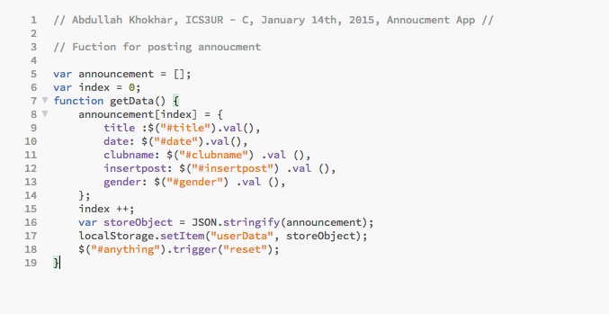
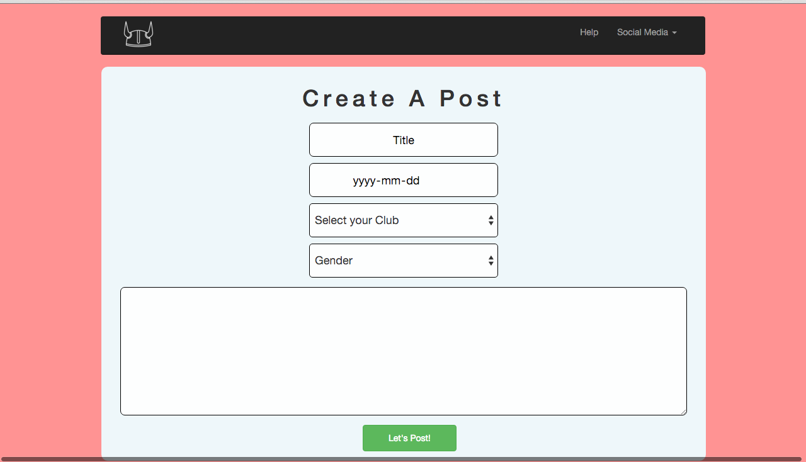
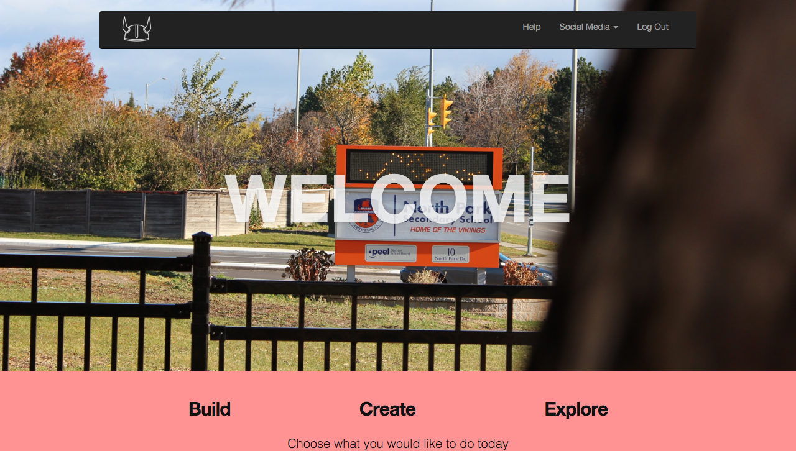
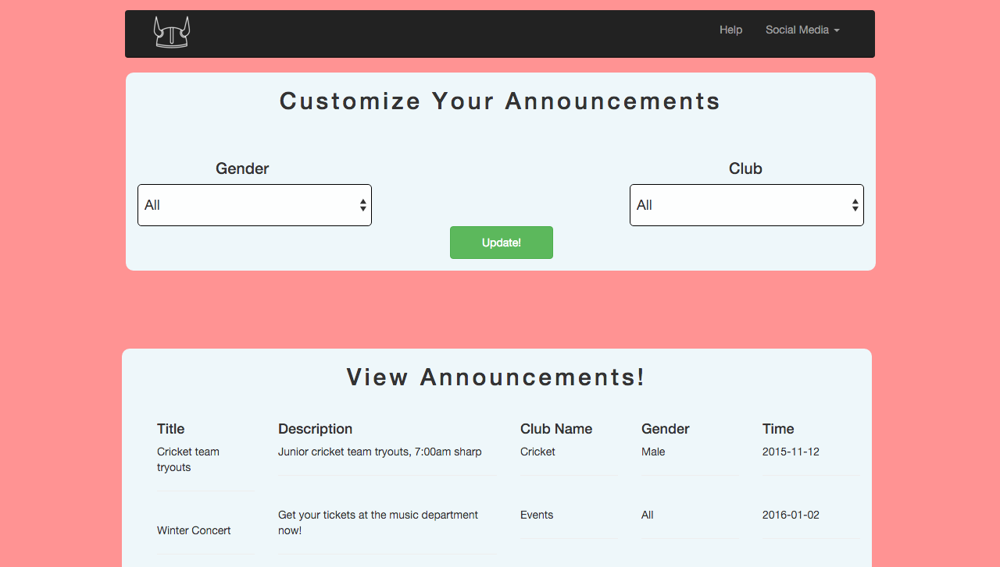

Prior to starting my code, and even opening up Brackets, I had absolutely no idea of the fundamentals related to code. Now that I am finished writing 3 main languages of code to complete my website, I am proud to say that I have learned and accomplished a lot throughout this one major project.
I like to start off my talking about the JavaScript related to my project, which I have completed in a neat and professional manor, which both is easy to understand and is functioning. Out of the many aspects of my website where I USED JavaScript, I personally feel the areas which I am most proud of is the JavaScript for teachers to post an announcement to the students viewing page, as well as the JavaScript for the filter that is available for students. Both of these features on my website have allowed me to realize the huge impact ICS has had on my ability to write code, as 5 months ago, I definitely would not have been able to complete such amazing components.
I will start off my showcasing one of the parts of my code I am very proud of, that being the JavaScript for the teachers to allow their announcements to be sent over to the student’s page.
Well, I sometimes think I know this to well. As seen in the code I have presented to you, I have showcased my ability to construct objects, arrays, as well my local storage in a matter of 15 lines of code, how cool is that? As you can see, line 8 is where my array begins, and my array holds a number of objects! An array allows me to store a number of values in the single variable I have assigned them all too. An object holds a string of information for the user to assign, in my scenario I clearly have the essentials of an announcement written out and stored. I have written a lot more detailed description of objects, variables, and arrays in my blog, check it out! Now let’s move into the 6 lines of code, where I have coded the fundamentals of local storage. Essentially, local storage allows me to store data locally which I can access elsewhere, in my scenario it is the students viewing page. I have learned the fundamentals of strings, and JASON in such a short amount of time; I again have more details about these aspects in my blog.
Personally I believe setting up this page would have been impossible for me prior to ICS as I had absolutely no knowledge of such workings, however now I am proud of what I have learned and look back at this page to recognize it as the certain aspect of my code that I am very proud of.
As a perfectionist, I strive to make everything look as elegant as possible. Despite CSS not being one the major concepts covered in class, I still focused on it a lot. Throughout the building of my website, I have come to learn a very important factor, that design of a specific page should be completed along side the functionality and not left to do after. CSS, known as the Cascading Style Sheet, is what allows there to be the desired design and style a user requires on their page. Despite other people choosing to use templates to base their websites off of, I have decided to design my website from complete scratch, which was frankly a really hard task. Two of the most proud features of my website is hands down the parallax effect I have used for the home pages of the students, and along side this the layout of the announcement viewing and creation page.
Going into my other pages, I have also laid out a specific color scheme that I feel Is visually appealing. I have tried to keep my website as simple as possible, with match colors and fonts for titles, placeholders, subtitles etc. As well as the blue color way set for pages where information is posted or entered! Along side this I also want tot take your attention towards the navigation bar evident in all of my pages, except for the log in. I have constructed this navigating bar using Bootstrap for the first time, and it came out amazing! I added the Vikings logo as well as the options held in the navigation bar all by myself, with help from detailed information located on Bootstraps website! I feel like both these things are also aspects of my code I am extremely proud of as both CSS and Bootstrap have taught me how to design my code, which makes me proud seeing the design I have made, and contrastingly JavaScript has taught me to make everything functional. Both of these aspects were practically impossible for me to complete if I hadn’t have joined CS, I would still probably be using templates from Wix!
